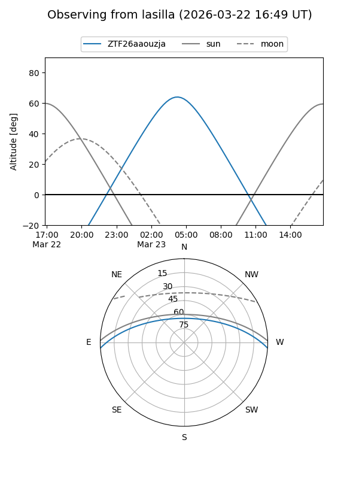
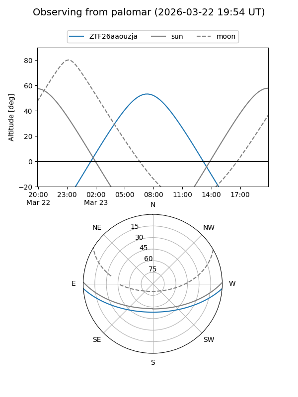

ZTF26aaouzja
Target ZTF26aaouzja at 2026-03-23 08:53
Aliases and brokers:
FINK: link
Lasair: link
ALeRCE: link
alt names
ZTF26aaouzja (ztf,fink_ztf)
Coordinates:
equatorial (ra, dec) = 173.3124,-3.17670
equatorial (HMS+DMS) = 11:33:14.99,-03:10:36.11
galactic (l, b) = (268.0033,+54.30537)
Flags:
Photometry:
last ztfg=16.57
1 ztfg detections
Lightcurve
Visibility


Additional plots